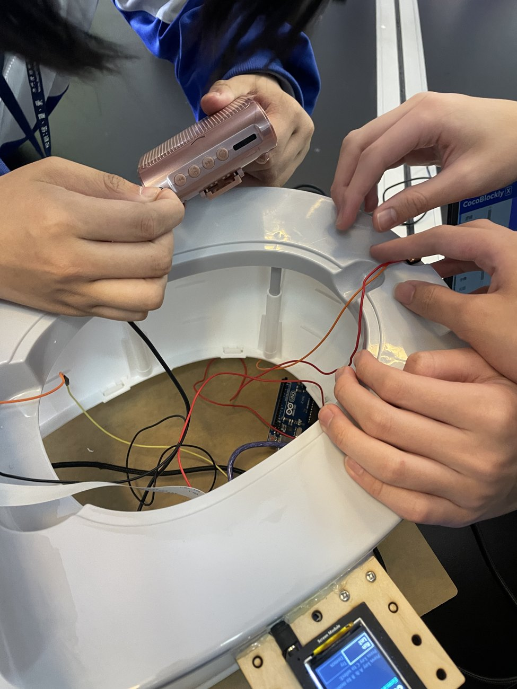

企业开发项目已投入使用
物业管理费收费系统
这个项目来自澳门顺富设施设备物业管理有限公司的实际需求。我用了约两个月，独立完成主要开发工作，从需求讨论一直做到测试与上线。系统目前已在公司使用。
- 我负责的部分
- 需求整理、系统设计、程序开发、测试与上线
- 项目材料
- 公司开发证明及推荐信，完整盖章文件可于现场提供
澳门浸信中学 · 高三 · 预计 2027 年毕业
WONG CHI UN

我为一家物业管理公司开发过收费系统，也参与过 AI 与硬件科创比赛。
做项目时遇到的问题，让我想进一步学好数学、算法和计算机基础。这一页记录了我的一些尝试。

这个项目来自澳门顺富设施设备物业管理有限公司的实际需求。我用了约两个月，独立完成主要开发工作，从需求讨论一直做到测试与上线。系统目前已在公司使用。

团队项目 · 我作为团队成员参与
团队尝试把物件识别和分类学习用在马桶模型上：先识别，再让控制模块作出对应动作。
项目使用 CocoRobo 模块，把 AI 识别、屏幕和传感器连接起来。原型用声音模拟冲水，设计用水量属于方案描述。
原型通过 AI 模块识别物件，再结合主控、屏幕及传感模块模拟冲水决策。相关团队作品获 2024 年阿基米德国际发明展金奖，证书收录在下方。

语音识别与物联网
这个装置希望让遇到危险的人可以通过声音求救。语音识别模组收到求救信号后，将信号传给主控板，再启动警报程序。
作品使用 ESP32 主控板、语音识别模组、LCD 和扬声器，探索把语音输入与警报装置连接起来。
2024 澳门国际创新发明展金奖
2024 ICC 中国区全国总决赛三等奖
点击证书可放大，也可下载 PDF。
8 项记录
团队奖项已标明；公开证书中的个人编号已遮盖。完整材料可于现场提供。
我目前最感兴趣的是 AI Agent 的规划和工具使用。
平时用 AI 编程工具做项目，看到它有时能完成复杂任务，有时却在简单的地方出错，我会想弄清楚原因。
我希望在大学先把数学、算法和计算机基础学扎实，再深入学习机器学习和智能系统。
2025/2026 学年 · 高二 · 满分 100
高一、高二学年「学业优异生」
2023/2024「名人堂」年度学术优异奖
依据学校成绩单整理，原件可于现场提供。
一页履历方便快速阅读，完整作品集附有项目说明和证书。
如果老师想进一步了解项目或学习情况，欢迎与我联系。